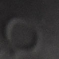
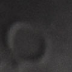

Sube tu foto del cráter

Resultado
Tú cráter saldrá aquí
¿No tienes una foto de un cráter?
¡Prueba con estas imágenes!
Archimedes
Copernicus
Eratosthenes
Plato

Timócaris
Tycho
Tú cráter saldrá aquí
Archimedes
Copernicus
Eratosthenes
Plato
Timócaris
Tycho